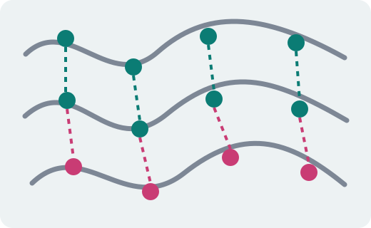
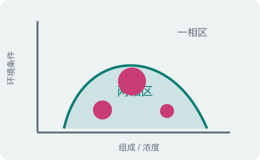
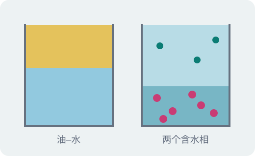
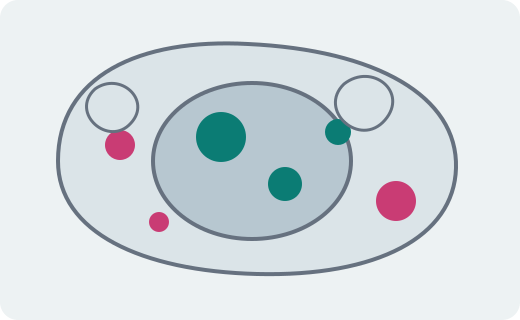
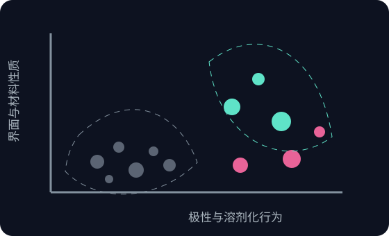
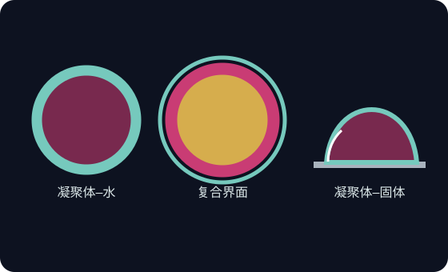
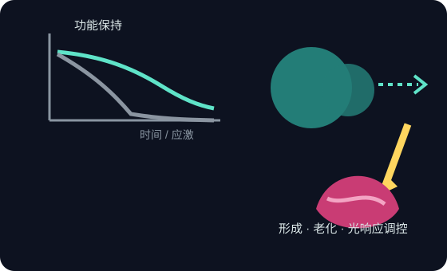
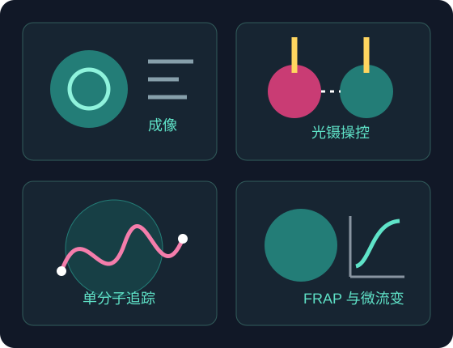

Research
四步理解相分离
理解这一现象不需要生物学背景。分子间作用力、溶解与混合、焓与熵、相图——本科化学课程中的这些内容已经足够把它讲通。
分子间的多价相互作用
氢键、静电作用、疏水作用与 π–π 堆积的强度均远低于共价键,单个作用在室温热运动下极易被破坏。但当一条长链分子上分布着数十个这样的结合位点时,分子之间可以同时形成多处连接,断开一处仍有其余维持。这种多价性使体系的整体结合能力远超单个作用的简单叠加,构成了相分离的分子基础。
关键词
多价性 multivalencyᅠ一个分子上具有多个结合位点
粘性基元与间隔段 stickers & spacersᅠ负责结合的片段与连接它们的柔性片段

越过阈值后的液–液相分离
当浓度、温度、盐浓度或 pH 越过某一阈值,原本澄清均匀的溶液会自发分成两相:一相富集高分子,另一相则被稀释,宏观上表现为溶液变浑浊。分出的浓相仍然是液体——液滴在表面张力作用下呈球形,可在流场中变形,相互接触后可在数秒内融合。这几条也是判断体系是否发生真正液–液相分离的基本判据。将上述条件绘成相图,曲线以内为两相区,以外为一相区。
关键词
浓相 / 稀相ᅠ分离后的两相,含水量接近,分子密度相差悬殊
双节线 binodalᅠ相图上分隔一相区与两相区的曲线

为什么两个水相可以互不相溶
油水分层源于极性差异,而相分离得到的两相含水量均在八成以上,其驱动力需要从自由能的两项分别考察。焓项取决于分子间相互作用与分子–水相互作用孰更有利;熵项则与分子尺寸密切相关:数百个单体连成一条链后,在混合过程中仅相当于一个独立粒子,可贡献的混合熵很小,因此较弱的焓优势即足以驱动分相。在带相反电荷的两种高分子体系中,配对过程还会释放原本被静电束缚的反离子,使体系总熵不降反升,分相直接由熵驱动,即复合凝聚。两相的差别因此不在含水量,而在分子的拥挤程度及其与水的相互作用方式。
关键词
Flory–Huggins 理论ᅠ描述高分子溶液混合自由能的基本框架
复合凝聚 complex coacervationᅠ由反离子释放驱动的聚电解质相分离

细胞中的凝聚体
细胞内的核仁、应激颗粒、P 小体等结构并无膜包被,其本质即为通过相分离形成的液滴。这种区室化方式可在数秒内完成组装与解离,无需合成或降解膜结构,同时将参与反应的分子浓缩于局部,显著提高反应效率。当液滴无法正常解离、并随时间逐渐固化时则会引发功能异常,多种神经退行性疾病与此密切相关。试管体系与细胞体系遵循同一套热力学与动力学规律,这使得基础研究与材料设计能够相互支撑。

我们在做什么
课题组从化学基元、界面、生物功能三个层面展开,并以光学观测与操控作为贯穿始终的技术路线。三个方向彼此衔接:新的化学基元带来新的界面行为,界面行为又决定了凝聚体能否承担实际的生物功能。
拓展凝聚体的化学空间
现有凝聚体研究所使用的化学基元相当有限,主要集中在多肽、核酸与少数几类合成聚电解质上。我们在常规合成单体之外,系统引入碳氟链、硅氧烷等非常规基元,利用其低表面能、独特的溶剂化行为与相互正交的作用方式,构建在极性、密度、黏度与相容性上明显区别于传统体系的新型凝聚体。这既拓宽了可达到的相行为范围,也为后续的界面调控与功能分子负载提供了新的自由度。
涉及方法ᅠ可控聚合与单体设计 · 浊度与相图测定 · 核磁与元素分析 · 流变与界面张力

凝聚体的界面工程
凝聚体的行为在很大程度上由其界面决定。我们关注三类界面:凝聚体–水界面、以凝聚体为冠层的油–凝聚体–水复合界面,以及凝聚体–固体界面。其中凝聚体–水界面最为基础,其极低的界面张力、分子在界面处的取向与富集,直接决定液滴的融合速率、长期稳定性与跨界面的物质交换能力,我们已在该界面上获得一系列结果,包括对 CAP 全称待补 的定量刻画。对油相与固体表面的拓展,则进一步把凝聚体带入乳液稳定、表面涂层与水下粘接等应用场景。
涉及方法ᅠ界面张力与液滴形变测量 · 界面流变 · 共聚焦与 STED 界面成像 · 光镊融合实验

用凝聚体增强与调控生物功能
凝聚体提供了一个高浓度、低水活度且分子高度拥挤的微环境,能够显著改变其中生物分子的行为。我们一方面研究凝聚体对酶的保护作用,考察其在高温、有机溶剂或长期储存条件下对催化活性与构象稳定性的维持;另一方面将凝聚体本身作为干预靶点,借助光响应手段调控病理性凝聚体的形成与老化过程(液–固转变),探索其在神经退行性疾病中的干预可能。
涉及方法ᅠ酶活与稳定性表征 · FRAP 与微流变 · 光控组装与解离 · 活细胞成像

以光学观测与操控为核心的研究手段
上述问题都要求在单个液滴、乃至单个分子的尺度上进行观测与干预,因此课题组以光学方法作为主要技术路线,从成像、操控到单分子追踪形成一条完整的观测链条。加入课题组的同学,会在这些平台上接受系统训练。
- 超分辨成像 STED突破衍射极限,解析液滴内部与界面处的亚结构与分子分布
- 光镊 / LUMICKs 平台直接操控单颗液滴或单条分子链,测量融合动力学、界面张力与分子间作用力
- 单分子追踪给出分子在浓相、稀相与界面之间的扩散系数、停留时间与交换速率
- 荧光恢复与微流变表征液滴内部黏度、弹性及其随时间的演化,判断液–固转变

化学与材料背景的同学,
在这里有明确的优势。
这个方向真正吃紧的地方,是高分子溶液的热力学、界面与流变,以及把它们测准的实验手段——这些恰好是化学与材料专业训练中最扎实的部分。生物学背景并非门槛,进组之后补足即可。